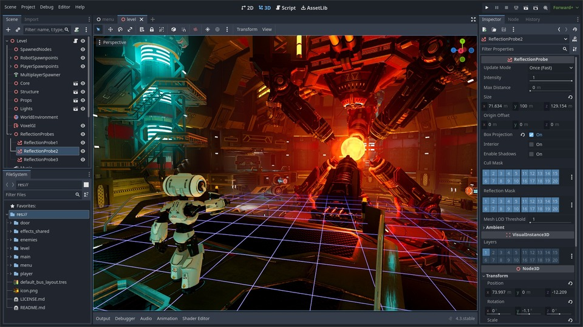

Godot is a recent addition to the Game Engine world, but due to it's more unique nature it has quickly garnered popularity, turning into one of the fastest growing game engines in recent time. It is open source and entirely free to use, no licensing fees or payments to use the game engine. It also has its own coding language made specifically for game development called GDScript, which may take a little bit to learn but is quite useful for developing. Godot is primarily made for 2D games but also has a lot of 3D game support.
The main problem with Godot so far stems from it's smaller size, having a smaller community for assets and help than its bigger competitors like Unity and Unreal, so for complete beginners it may be a bit harder especially for brand new projects. It also lacks support for more intensive games that require high graphics, but that should be remedied with future updates as the open-source project expands.